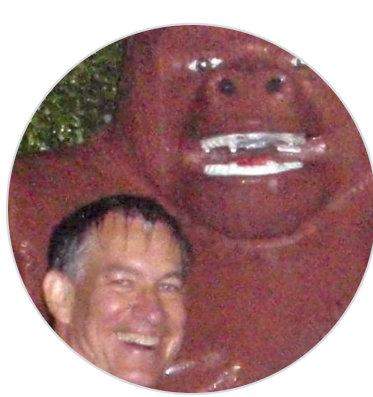
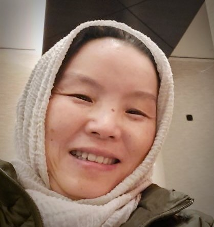

Meet The Team

John Graybeal
Consultant (VSSIG Co-Chair)

Asiyah Lin
Axle Research Technology & NIH
Anna Maria Masci
MD Anderson Cancer Center, UT
Eric G. Stephan
PNNL
Juliane M. Schneider
PNNL
Wolmar Nyberg Åkerström
Uppsala University

Barbara Magagna
GO FAIR Foundation
Maria Shatz
NIEHS / NIH
Muhammad Tuan Amit
University of Texas Medical
Hande Küçük McGinty
Kansas State University